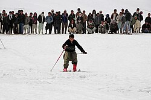
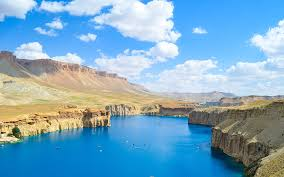

Shahr-e Zuhak in Bamiyan is one of many fascinating sites that both foreign visitors and local tourists can explore while they visit Afghanistan and exploring Bamiyan Province. This remarkable wonder, also known as The Red City, holds immense historical and cultural significance that stretches back over centuries. Nestled in the rugged landscape, Shahr-e Zuhak offers a unique blend of natural beauty and ancient archaeology that captures the essence of the Afghan past. The site is a testament to the diverse history of the region, witnessing the rise and fall of many great empires, and standing resilient through the passage of time.
The famous Bamiyan Buddha statues from the 6th century. Around the niches of the two 53 and 35 meter high, destroyed statues, at least 900 caves are carved into the rock, decorated with frescoes and stucco work.
The Islamic fortress Schahr-i Suhak about 15 km east of the cliff from the time of the Ghaznavids and the Ghurids (10th to 13th centuries).
The remains of Qallai Kaphari about 12 km east of the cliff with protective walls, towers, and castles.
The fortified castle Schahr-e Gholghola on a hill in the middle of the valley (6th to 10th centuries).
The Kakrak valley about 3 km southeast of the cliff contains over 100 caves from the 6th to 13th centuries, the remains of a 10 meter high Buddha statue and an altar with paintings from the Sassanid Empire.
The caves in the Foladi Valley about 2 km southwest of the cliff, especially the ornate Qoul-i Akram and Kalai Ghamai caves.
"Ski championships" have been held in Bamiyan since 2011. It is a one-time race with a mass start. The first skiers were equipped with modern equipment in 2011. However, locals also used "replicas" of skis to move around in the mountains, for example in search of runaway pets.
Skiing in Bamyan
On November 4, 2016, a marathon took place in Bamiyan, in which women athletes participated for the first time.

Cultural Landscape and Archaeological Remains of the Bamiyan Valley The cultural landscape and archaeological remains of the Bamiyan Valley represent the artistic and religious developments which from the 1st to the 13th centuries characterized ancient Bakhtria, integrating various cultural influences into the Gandhara school of Buddhist art. The area contains numerous Buddhist monastic ensembles and sanctuaries, as well as fortified edifices from the Islamic period. The site is also testimony to the tragic destruction by the Taliban of the two standing Buddha statues, which shook the world in March 2001.
Dambura is one of the Famous traditional music equipment which is guitar-like is made from mulberry wood, which is popular and largely used by classic singers and folklore, musicians mainly played in central. traditional Dambura festival is held each year in a bid to help improve the tourism industry of Bamyan province.
"Bamyan art bazaar" which made by Afghan women in Bamyan where they display and sell their handicrafts to internal and foreign tourists who visit the province. Carpets, rugs, felts, embroidery, pottery and other local women's products can be mostly found in the art market shops. All the sellers are women and the products they sell are either their own or bought from women providing at homes. The city of Bamiyan is the only urban settlement in the entire Bamiyan Province. It became the center of the then-newly created Bamiyan Province in 1964. The city grew rapidly, but at the same time suffered from the lack of a zoning plan. Bamiyan's bazaar at that time had around 300 to 400 shops and its market was very busy twice a week.